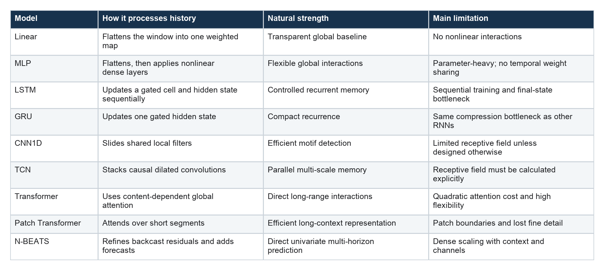

Which Time-Series Model Should You Use?
A practical comparison of access, memory, computation, and inductive bias
Series: Sequence Models for Prediction, Part 12 of 15
There is no universally best sequence model.
The useful question is not “Are Transformers better than LSTMs?” It is:
Which way of processing history matches the structure, scale, and constraints of this forecasting problem?
Linear models, recurrent networks, convolutions, attention, patching, and residual basis models differ mainly in how information travels from the observed window to the future. Understanding those paths gives us a better starting point than choosing whichever architecture is currently fashionable.
The comparison at a glance

This table is a map, not a ranking.
Start with the simplest credible baseline
Before choosing a neural architecture, define a naive forecast that captures the obvious domain behavior. Then add a regularized linear model.
The linear forecaster tells us whether stable weighted relationships across the window already solve most of the problem. It trains quickly, exposes coefficients by horizon, and makes a complex model earn its cost.
If the linear model is competitive, that is not disappointing. Simpler systems are easier to debug, retrain, explain, and serve.
Before deep learning, run CatBoost
There is an uncomfortable recurring result in applied forecasting: a carefully prepared gradient-boosting model can beat an elegant LSTM, TCN, or Transformer.
CatBoost and related boosted-tree methods operate on fixed rows rather than raw sequences. Give them causal lag values, calendar fields, rolling statistics, changes, and any future-known covariates available at the forecast origin. They are particularly strong on small and medium datasets, where flexible neural models may have too little independent evidence and too much optimization freedom.
The comparison must use the same prediction timestamps and information budget. A tree model with two years of lag features should not be presented as equivalent to a network receiving one week of raw history. Conversely, forbidding trees from using tabular temporal features removes the representation they are designed to exploit.
A boosted-tree victory is not a consolation result. It often means the useful relationships are mostly thresholded feature interactions rather than patterns that require end-to-end sequential representation learning. In a production setting, that can be excellent news: training, diagnostics, and feature attribution may all become easier.
Complete CatBoost baseline
The following implementation builds one causal tabular row per forecast origin and fits one CatBoost regressor for each future horizon. Separate horizon models make the strategy explicit and allow early stopping against the same chronological validation period. This code defines a follow-up benchmark; it was not run in the supplied electricity notebook.
import numpy as np
import pandas as pd
from catboost import CatBoostRegressor
def make_causal_feature_frame(target, timestamps):
"""Features known immediately before each origin."""
series = pd.Series(
np.asarray(target, dtype=np.float32),
index=timestamps,
)
previous = series.shift(1)
hour = timestamps.hour.to_numpy()
dow = timestamps.dayofweek.to_numpy()
features = pd.DataFrame(index=timestamps)
features["lag_1"] = previous
features["lag_24"] = series.shift(24)
features["lag_168"] = series.shift(168)
features["change_1"] = (
previous - series.shift(2)
)
features["change_24"] = (
previous - series.shift(25)
)
features["mean_24"] = previous.rolling(
24, min_periods=24
).mean()
features["std_24"] = previous.rolling(
24, min_periods=24
).std(ddof=0)
features["mean_168"] = previous.rolling(
168, min_periods=168
).mean()
features["std_168"] = previous.rolling(
168, min_periods=168
).std(ddof=0)
features["hour_sin"] = np.sin(
2 * np.pi * hour / 24.0
)
features["hour_cos"] = np.cos(
2 * np.pi * hour / 24.0
)
features["dow_sin"] = np.sin(
2 * np.pi * dow / 7.0
)
features["dow_cos"] = np.cos(
2 * np.pi * dow / 7.0
)
features["weekend"] = (
dow >= 5
).astype(np.float32)
return features.astype(np.float32)
def rows_at_origins(
feature_frame,
target,
origins,
horizon,
):
origins = np.asarray(origins, dtype=np.int64)
x = feature_frame.iloc[origins].copy()
y = np.column_stack([
np.asarray(target)[origins + step]
for step in range(horizon)
]).astype(np.float32)
valid = (
np.isfinite(x.to_numpy()).all(axis=1)
& np.isfinite(y).all(axis=1)
)
return x.loc[valid], y[valid]
class DirectCatBoostForecaster:
def __init__(
self,
horizon,
iterations=2000,
learning_rate=0.03,
depth=8,
random_seed=42,
):
self.horizon = horizon
self.parameters = {
"loss_function": "RMSE",
"eval_metric": "RMSE",
"iterations": iterations,
"learning_rate": learning_rate,
"depth": depth,
"l2_leaf_reg": 5.0,
"random_seed": random_seed,
"verbose": False,
"allow_writing_files": False,
}
self.models = []
def fit(
self,
x_train,
y_train,
x_validation,
y_validation,
):
if y_train.shape[1] != self.horizon:
raise ValueError(
"y_train must be [samples, horizon]"
)
self.models = []
for step in range(self.horizon):
model = CatBoostRegressor(
**self.parameters
)
model.fit(
x_train,
y_train[:, step],
eval_set=(
x_validation,
y_validation[:, step],
),
use_best_model=True,
early_stopping_rounds=100,
)
self.models.append(model)
return self
def predict(self, x):
if len(self.models) != self.horizon:
raise RuntimeError(
"fit must be called before predict"
)
return np.column_stack([
model.predict(x)
for model in self.models
])
# Build these from the same chronological origins used
# by the neural models.
feature_frame = make_causal_feature_frame(
target=target_values,
timestamps=timestamps,
)
x_train, y_train = rows_at_origins(
feature_frame,
target_values,
train_origins,
horizon=24,
)
x_validation, y_validation = rows_at_origins(
feature_frame,
target_values,
validation_origins,
horizon=24,
)
x_test, y_test = rows_at_origins(
feature_frame,
target_values,
test_origins,
horizon=24,
)
catboost_model = DirectCatBoostForecaster(
horizon=24
).fit(
x_train,
y_train,
x_validation,
y_validation,
)
predictions = catboost_model.predict(x_test)
assert predictions.shape == y_test.shape
CatBoost also supports multidimensional regression objectives such as MultiRMSE; the one-model-per-horizon version above is chosen for transparency and horizon-specific early stopping. See the official CatBoost regressor and fit documentation. The reusable source is in the companion CatBoost module.
Choose an MLP for global nonlinear interactions
An MLP is the next baseline when any historical coordinate might interact with any other and the input window has fixed length.
It is often surprisingly strong on medium-sized tabularized forecasting problems. It is less parameter-efficient as the number of timestamps and variables grows because the first dense layer connects to the entire flattened window.
Use it when global nonlinear flexibility matters more than translation invariance or streaming state.
Choose recurrence when state evolution is the right story
LSTM and GRU reuse one transition across time. They are natural when the system can be represented as an evolving state that absorbs each new observation.
Choose an LSTM when the extra gate and separate cell state are affordable and potentially useful. Choose a GRU when a smaller, simpler recurrent model is attractive.
Neither should be selected through folklore. Compare them at equivalent training budgets, report parameter count, and test several hidden widths. The difference between them is often smaller than the difference caused by preprocessing or evaluation design.
Recurrent models are particularly convenient for streaming because a hidden state can be updated as data arrive. That serving pattern must match training; carrying state indefinitely is not equivalent to evaluating independent fixed windows.
Choose a CNN when local motifs repeat
A 1D CNN applies the same detector everywhere in the window. This is powerful when local shapes recur at different times: ramps, spikes, oscillations, bursts, or short transitions.
Kernel size and depth define the local receptive field. Pooling decides whether exact position survives. A shallow CNN with global average pooling mainly learns whether a motif occurred, not necessarily when it occurred.
Choose a CNN when local translation-equivariant patterns are plausible and parallel computation matters.
Choose a TCN when you want convolutional memory
A TCN uses causal dilation to connect the present representation with a longer history. It retains convolutional weight sharing and parallel training while making the receptive field a controllable design variable.
TCNs are strong candidates for long causal sequences, but the dilation schedule must cover the dependencies the task requires. A 168-step input attached to a 31-step receptive field is still a 31-step model at its final activation.
Choose a TCN when local and multi-scale structure matter and you can design the receptive field deliberately.
Choose a Transformer for content-dependent global retrieval
Self-attention lets every token retrieve information from every other token based on learned content similarity. This creates short paths to distant observations and highly flexible interactions.
That flexibility needs data and regularization. Full attention cost grows quadratically with token count, positional information must be represented, and the forecast head still determines how history becomes future outputs.
Choose a Transformer when global relationships are plausible, context length is manageable, and the dataset supports its capacity. For rich covariates and multi-horizon outputs, consider forecasting-specific attention architectures rather than a generic encoder by default.
Choose a patch Transformer when points are too granular
Patching turns local segments into tokens. It reduces attention cost and lets each token describe a short shape instead of one scalar timestamp.
The trade-off is resolution. Patch length, stride, overlap, channel handling, and boundary alignment all affect what survives.
Choose patching when context is long and local segments form meaningful units. Test several patch geometries rather than treating one length as canonical.
Choose N-BEATS for direct residual forecasting
N-BEATS uses fully connected blocks that explain part of the past through a backcast and add a contribution to the future forecast.
It is attractive for univariate, direct multi-horizon prediction and can support interpretable trend and seasonality bases. Dense backcast heads become expensive when context and feature count grow.
Choose it when the target’s own history contains most of the signal and iterative residual decomposition fits the task.
Dataset size changes the answer
Small datasets usually reward strong priors and controlled capacity. Linear models, compact recurrent networks, and small convolutional models are difficult to beat honestly.
Larger collections of related series can support global neural models. A model trained across many customers, sensors, products, or assets sees more independent situations than one trained on overlapping windows from a single series.
Count independent entities and regimes, not only windows.
Forecast horizon changes the answer
For one-step forecasting, a compact recent-state representation may be enough. For long direct horizons, different future positions may need different historical evidence.
Final-state pooling can become restrictive. Horizon-specific queries, encoder-decoder structures, skip connections, and direct residual heads become more valuable as the future path grows.
Always inspect error by horizon. One aggregate score can hide a model that excels near term and fails farther out.
Operational constraints change the answer
Accuracy is not the only design objective.
Consider:
- training and inference latency;
- memory use;
- retraining frequency;
- online versus batch serving;
- interpretability requirements;
- missing-data behavior;
- support for known future variables;
- point forecasts versus predictive distributions.
A slightly more accurate model may be the wrong system if it cannot be monitored or updated reliably.
A practical model-selection ladder
For a new forecasting problem:
- Establish naive seasonal or persistence baselines.
- Train a regularized linear direct forecaster.
- Train CatBoost or another boosted-tree model on causal tabular features.
- Add an MLP as a global nonlinear baseline.
- Test one recurrent model and one convolutional model.
- Calculate the convolutional receptive field explicitly.
- Add a Transformer only when global retrieval or richer covariate handling is justified.
- Test patching when context length makes point-wise attention expensive.
- Include N-BEATS when univariate direct forecasting is central.
- Compare across time folds and random seeds.
- Prefer the least complicated model whose advantage is stable and operationally meaningful.
The final choice is evidence plus constraints—not architecture mythology.
Part 13 puts the algorithms into a shared electricity-prediction experiment using raw history only.
Further reading
- Long Short-Term Memory
- The GRU-based RNN encoder-decoder
- An Empirical Evaluation of Generic Convolutional and Recurrent Networks for Sequence Modeling
- Attention Is All You Need
- A Time Series Is Worth 64 Words
- N-BEATS
Series navigation: Series index · Previous: N-BEATS-style forecasting · Next: Electricity model comparison